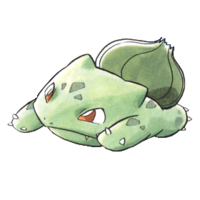
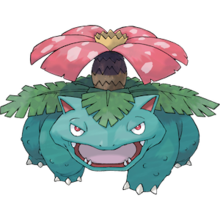

| Kdex | Ndex | Pokemon | Type | Appearances (Taken from Bulbapdeia) |
|---|---|---|---|---|
| #001 | #001 | Bulbasaur  | Grass/Poison |
In Bulbasaur, Come Home!, Red receives a Bulbasaur from Professor Oak after helping capture all the Pokémon he accidentally set free. Bulbasaur, now named Saur, has since evolved into Ivysaur, and then to Venusaur. It has also been shown in the manga that Bulbasaur has the ability to suck in large amounts of air through his bulb, as seen in That Awful Arbok! where he sucked up the mist in Pokémon Tower as well as the Gastly that made it. Another Bulbasaur appeared as a silhouette when Green explains about Mew in The Jynx Jinx. Professor Sycamore owns a Bulbasaur in They Have a Flare for a Li'l Kanga-Napping. |
| #002 | #002 | Ivysaur

| Grass/Poison |
Red had an Ivysaur named Saur that evolved from his Bulbasaur upon his arrival at Celadon City in Wartortle Wars. He evolved into Venusaur during a battle with the legendary bird hybrid at Silph Co. in The Winged Legends. Emerald rented an Ivysaur during his Battle Factory challenge in Pinsir Me, I Must Be Dreaming. An Ivysaur appeared in Skirting Around Surskit I as a rental Pokémon that Guile Hideout stole. In Interrupting Ivysaur, an Ivysaur under the ownership of a Pokémon Breeder named Leonardo appeared during Platinum's challenge at the Battle Arcade. |
| #003 | #003 | Venusaur  | Grass/Poison |
Red has a Venusaur nicknamed Saur which he received as a Bulbasaur from Professor Oak in Bulbasaur, Come Home! after witnessing the bond shared between the two while battling a wild Machoke, learning Solar Beam in the process. Bulbasaur evolved into Ivysaur in Wartortle Wars after defeating a wild Primeape, and into Venusaur in The Winged Legends while fighting against the merged version of Zapdos, Moltres, and Articuno along with Blue's Charizard and Blasty, defeating it with his augmented Solar Beam while the others used Flamethrower and Hydro Pump, respectively. In the Omega Ruby & Alpha Sapphire chapter, he has obtained a Venusaurite, with it he can Mega Evolve into Mega Venusaur. A Venusaur was fantasied along with the other fully evolved Kanto Starters in Chinchou in Charge, where the Pokémon Association Chairman of Kanto and Johto explains to Bill and Janine the special privilege of entering the finals unconditionally after collecting the badges. A Venusaur appeared alongside a Poliwrath in PSs1, kidnapping Pibu. |
| #004 | #004 | Charmander

| Fire |
Charmander debuted in the first round of the Red, Green & Blue chapter, A Glimpse of the Glow, where one appeared in a fantasy explanation of Red and as one of Blue's first Pokémon, received from his grandfather Professor Oak. He has since evolved into Charmeleon before facing Brock of Pewter City, and then to Charizard before the Silph Co. battles against Team Rocket. The major powerhouse of his team with his newly learned Blast Burn attack, his battle skills (able to defeat Red's Poliwhirl easily even before evolving) are complimented by his fast flight, for which he was traded to Red twice, during both the Gold, Silver & Crystal chapter and the FireRed & LeafGreen chapter. It is worth noting that, as Charmeleon, he was accidentally traded to Red many years earlier. Another Charmander appeared as a silhouette when Green explains about Mew in The Jynx Jinx. After X's Marisso lost to him in a battle X decided to take him and named him Salamè in Chespin Sows the Seeds of Change. He later evolved into a Charmeleon alongside Marisso who evolved into a Quilladin in Quilladin Stands. |
| #005 | #005 | Charmeleon

| Fire |
Charmeleon debuts in Onix is On!, battling in the Pewter Gym as one of Blue's Pokémon. He evolved from Charmander sometime between The Secret of Kangaskhan and this round. When Red and Blue collided in Celadon City, Red mistakenly picked up the Poké Ball of Blue's Charmeleon, but he managed to give it back to Blue later. He has since evolved into Charizard with Blue's intense training, and became even more powerful, assisting in the defeat of both the Team Rocket triads Koga and Sabrina, and continued to act as the powerhouse for both Blue and Red, in the two times it was (temporarily) traded to him since then. Multiple Charmeleon were used by Team Galactic Grunts in Exit Empoleon. X's Charmander, Salamè, evolved into a Charmeleon alongside Marisso who evolved into a Quilladin in Quilladin Stands. |
| #006 | #006 | Charizard

| Fire |
One of Blue's main Pokémon, Charizard, debuted as a Charmander. With his increased capacity for battle both with augmented strength and his flight ability, he proved to be a valuable asset for Blue, both during the Silph Co. battles and in the Pokémon League, where Red's Venusaur narrowly defeated him. He had evolved from Charmeleon sometime before Kalling Kadabra. In the X & Y chapter, he has obtained a Charizardite Y, with it he can Mega Evolve into Mega Charizard Y. A Charizard appeared as one of Pryce's ice sculptures in his gym in Irked Igglybuff and Curmudgeonly Cleffa. A Charizard was fantasied along with the other fully evolved Kanto Starters in Chinchou in Charge, where the Pokémon Association Chairman of Kanto and Johto explains to Bill and Janine the special privilege of entering the finals unconditionally after collecting the badges. X's Charmeleon, Salamè, evolved into a Charizard during a battle against Xerosic's Pokémon in Charizard Transforms. He has a Charizardite X hidden in the flame on the tip of his tail, with it he can Mega Evolve into Mega Charizard X. A Poké Ride Charizard appeared in a flashback in PASM17. |